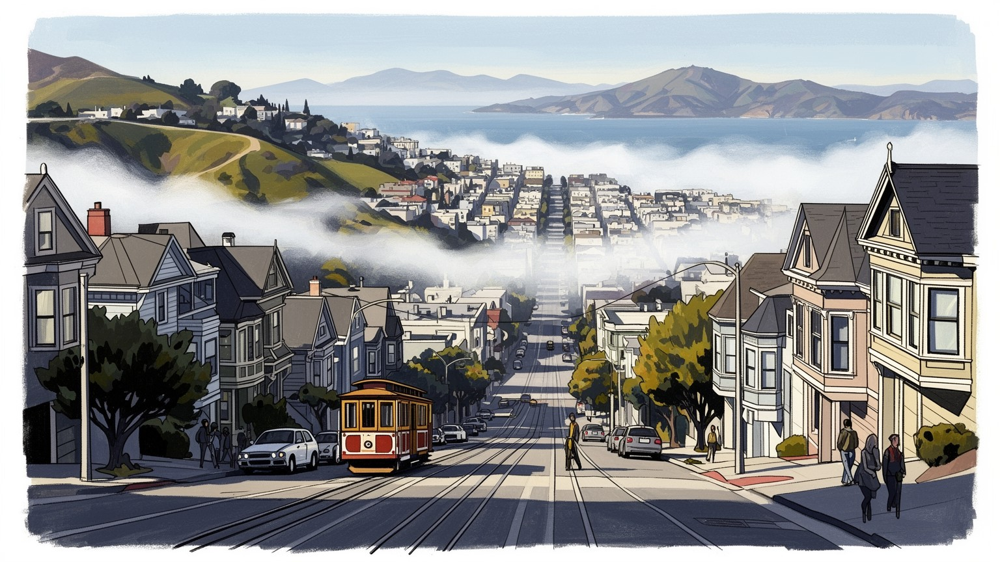
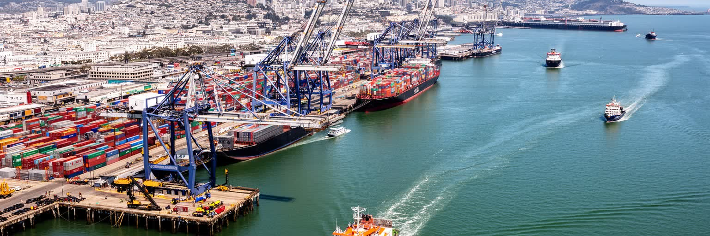
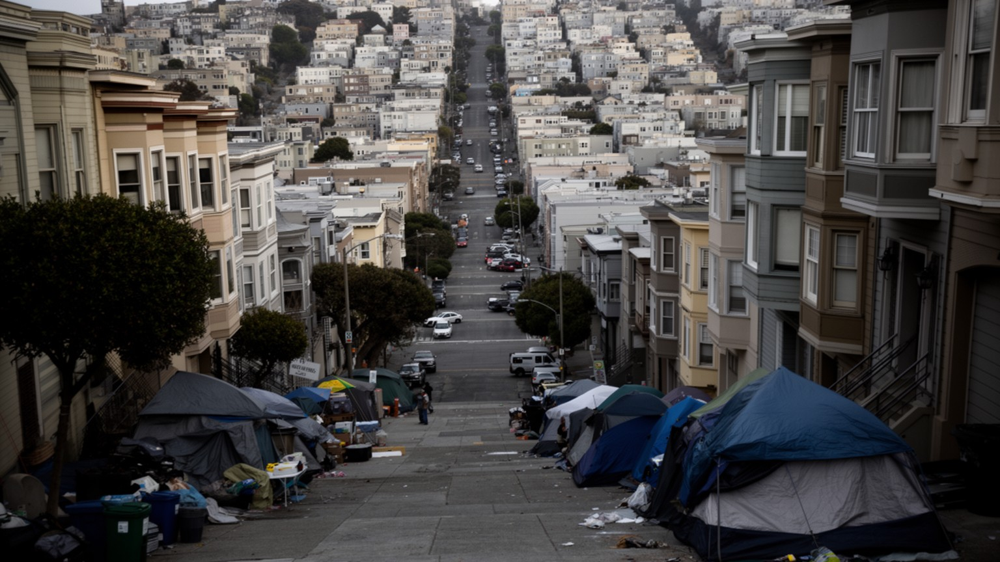
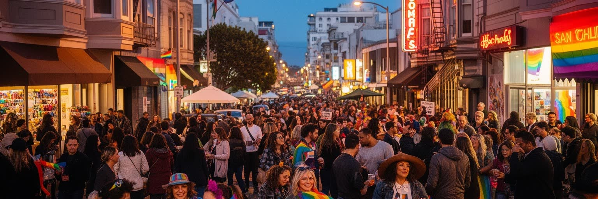
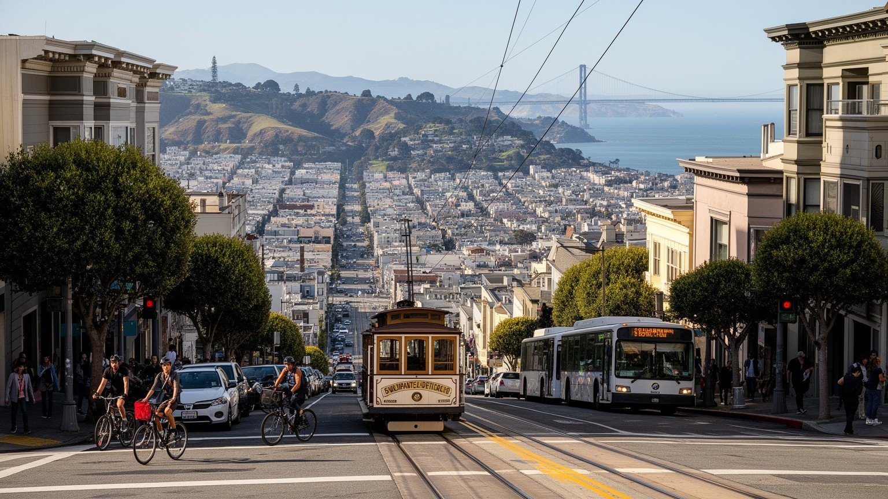
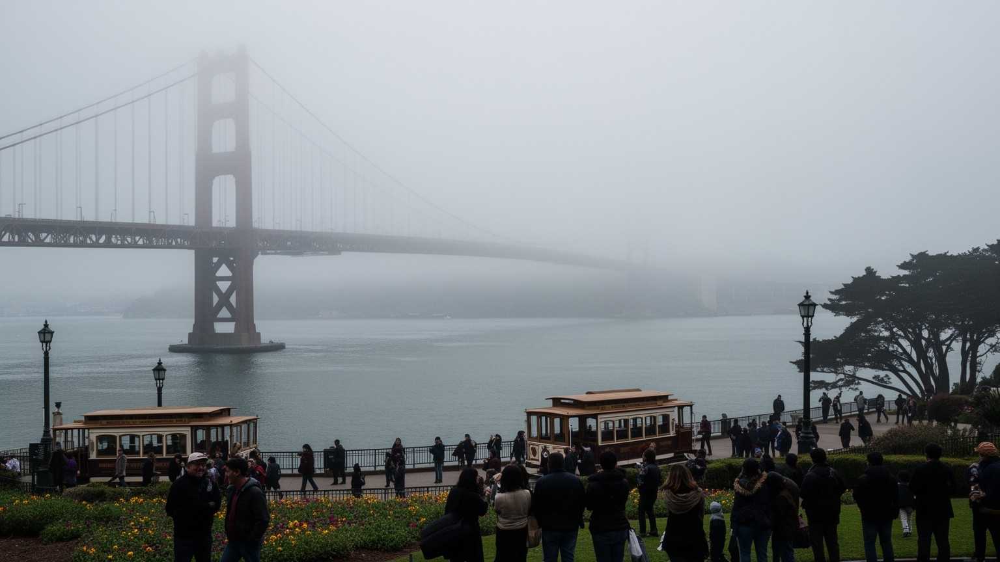
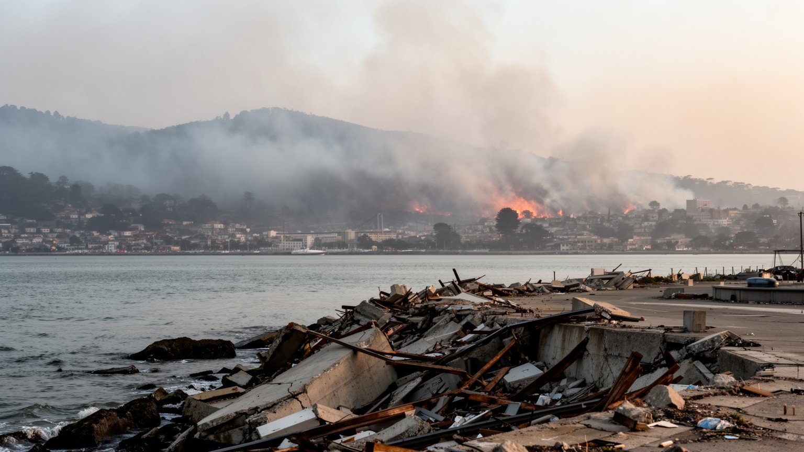

地政学
太平洋と米国西海岸の接点にあり、湾岸の港、空港、大学、金融、アジアとの交流が都市圏を外へ開きます。橋と海峡は交通路であり、地震時の弱点にもなります。移民史と太平洋外交の記憶も街に残る重要な要衝です。

🇺🇸 アメリカ合衆国 / 北米 / World City Atlas
霧の湾岸地形、太平洋港、テック経済、移民地区、住宅危機、LGBTQ文化、観光名所が重なる北米西海岸の都市です。
都市の骨格
太平洋、湾、丘陵、断層、橋、鉄道、港が、狭い半島の都市に高い価値と深い緊張を同時に集めます。

太平洋と米国西海岸の接点にあり、湾岸の港、空港、大学、金融、アジアとの交流が都市圏を外へ開きます。橋と海峡は交通路であり、地震時の弱点にもなります。移民史と太平洋外交の記憶も街に残る重要な要衝です。
ソフトウェア、AI、ベンチャー投資、金融、医療研究、観光が高い所得を生む一方、清掃、飲食、介護、配送、建設の労働が都市を支えます。高賃金職とサービス職の距離が近く、生活費の重さで通勤圏が湾岸全体へ広がります。
チャイナタウン、ミッション、カストロには寺院、教会、壁画、食堂、ライブの夜が近接します。プライドや旧正月、路上の音楽は、移民と性的少数者の可視性を公共空間へ広げ、市場と祝祭に若者や家族も集まります。
坂道、霧、ケーブルカー、湾岸散歩、ビクトリアン住宅、橋の眺めは観光の核ですが、住民には家賃、ホームレス、治安感覚、交通費が日常の現実です。名所の美しさと生活の不安が同じ通りで見える都市の深い現実です。
サンフランシスコは広い平野に伸びる都市ではなく、太平洋へ突き出した半島の先端、湾口の狭い地形に詰め込まれた都市です。西には冷たい海流、東にはサンフランシスコ湾、北には金門海峡があり、霧と海風が坂の上から通りへ降りてきます。丘を一つ越えるだけで日差し、匂い、音の反響が変わり、住宅価格や通勤経路も変わります。ゴールデンゲート橋とベイブリッジは観光名所であると同時に、北湾、東湾、半島、シリコンバレーを結ぶ生命線です。ですが橋と海峡に頼る構造は、地震や火災、交通事故、通勤混雑の弱点にもなります。港、フェリー、鉄道、空港、ハイウェイは湾岸の複数都市を結び、オークランド、バークリー、サンノゼを含む都市圏を動かします。水辺ではフェリーの汽笛、屋台の油の匂い、ランナーの足音が重なり、ゴールデンゲートパークやプレシディオではマラソン、自転車、草野球、子どもの遊びが日常の風景になります。狭い市域に企業、観光地、住宅、福祉施設、移民地区が重なるため、土地の希少性は政治問題になります。美しい地形は魅力であると同時に、眺望と交通の近さを誰が買えるのかを問う条件でもあります。行政境界を越えて働く人は、税収や学校制度の差も毎日渡っています。霧に濡れたユーカリの匂い、坂を下るブレーキ音、湾から戻る冷気までが、地図では見えない都市の境界をつくっています。
サンフランシスコの経済は、シリコンバレーそのものとは少し違います。半導体工場や郊外キャンパスの集積というより、ソフトウェア、AI、クラウド、金融、デザイン、法律、広告、ベンチャー投資、大学研究、医療、観光が高密度に交差する都市型の知識経済です。ダウンタウンの高層ビル、サウス・オブ・マーケットのオフィス、共同作業空間、大学病院、投資家の会議室、カフェは、資金と人材とアイデアが短い距離で出会う場になりました。UCSFや近隣大学は研究者、留学生、医療従事者を集め、若者の議論は書店、講演会、ポッドキャスト、地域メディアにも流れ込みます。成功した企業は世界の働き方や情報流通を変えますが、その利益は都市の住宅市場と労働市場にも強く影響します。高い報酬を得る技術者や経営者がいる一方、オフィス清掃、警備、飲食、配送、介護、保育、ホテル、公共交通の労働者は、同じ都市を支えながら遠い郊外から通うことが多いです。リモートワークの拡大や景気循環は中心業務地区の空室、税収、小売、夜の人通りにも波及しました。革新の速さは都市の誇りですが、株式報酬、解雇、移民ビザ、労働組合、生活費を一緒に見なければ、街の持続性は読めません。地元紙や公共ラジオは好況の物語だけでなく、空室、薬物、教育格差、移民労働を追い、都市経済を検証する鏡になっています。

サンフランシスコは現在、コンテナ物流の中心をオークランド港など湾岸の別地点へ譲っていますが、太平洋港としての歴史は都市の性格を深く形づくっています。ゴールドラッシュ期の急成長、アジアとの航路、中国系移民の到着、軍事と造船、倉庫街、フェリー、魚市場、労働争議は、海に向いた都市の記憶です。港は商品だけでなく、人、病気、宗教、料理、新聞、音楽、労働運動、差別的な移民政策も運びました。エンバーカデロの再生やフェリービルの市場は水辺を観光と買い物の場所へ戻しましたが、整った岸辺の背後には港湾労働、倉庫、冷蔵物流、清掃、警備、交通管理があります。朝の市場にはコーヒー、パン、魚介、果物の匂いが混じり、観光客、通勤者、高齢者、屋台で働く人が同じ通路を歩きます。湾岸はまた太平洋戦争、冷戦、海軍施設、退役軍人、反戦運動の記憶を抱えます。港町としてのサンフランシスコは、自由で国際的な雰囲気だけでは語れません。排除と受け入れ、商業と労働、観光とインフラが同じ水際で重なってきたからです。今日の都市がAIや金融で知られるとしても、港の歴史を抜きにすれば、移民街、フェリー通勤、水辺の市場の意味は見えません。週末にはフェリービル周辺の買い物客、湾岸を走る人、路上演奏、観光バスが重なり、港は働く場所であり余暇の舞台にもなります。

サンフランシスコの住宅問題は、単なる家賃の高さではなく、都市の社会構造を変える力を持ちます。狭い市域、地形の制約、厳しい建築規制、地域ごとの反対運動、歴史的住宅の保存、テック経済による高所得需要、投資資金、短期賃貸、公共住宅の不足が絡み合い、住みたい人と住める人の差を広げてきました。ビクトリアン住宅や坂の街並みは観光資源であり住民の誇りでもありますが、保全が新しい住戸供給を難しくする場合もあります。家賃が上がれば、教師、看護師、店員、料理人、音楽家、若い家族、移民労働者は遠い郊外へ移り、子どもの学校選びや高齢者の通院にも負担が出ます。路上生活や薬物依存、精神医療、治安への不安は、住宅の不足と福祉の制度不全に結びついています。歩道の物売り、空き店舗、支援団体の配食、警備員の巡回は、繁栄の隣にある路上経済を見せます。自由な文化は多様な人が近い距離で暮らせたことから生まれました。住宅が富裕層だけの資産になれば、ライブハウス、食堂、市場、保育の現場を支えた層が押し出されます。新築、家賃保護、ホームレス支援、公共交通を一体で考えなければ、街は景観を保ちながら働く人を失います。スーパーや薬局が閉じる通りでは、高齢者の買い物や子どもの放課後の安全も揺らぎ、住宅問題は近隣サービスの問題にも広がります。
サンフランシスコの移民地区は、観光用の異国情緒ではなく、労働、差別、家族、信仰、商売、政治参加の歴史を背負っています。チャイナタウンは北米で最も古い中国系コミュニティの一つで、排華法、隔離、火災後の再建、観光化、住民の高齢化を経験しながら、食品店、会館、寺院、学校、新聞、祭りを通じて生活圏を守ってきました。店先には乾物、点心、茶、薬草の匂いが並び、高齢者が買い物をし、子どもが放課後に家族の店へ戻ります。ミッション地区ではタコス、ブリトー、ベーカリー、壁画、カトリック信仰、移民支援、スペイン語のラジオが街の色をつくり、ジェントリフィケーションへの抵抗も広がります。家族経営の食堂や市場は都市の魅力として消費されやすいですが、その背後には在留資格、家賃、学校、医療、警察との関係があります。ジャパンタウンやフィリピン系の歴史、黒人コミュニティの移動も、湾岸都市の多層性を示します。多様性を都市ブランドで終わらせず、住民が住み続け、祭りが通りを使える条件が必要です。観光客の列の隣で、生活の買い物と世代間の通訳が重なります。通りの市場、旧正月の爆竹、死者を悼む祭壇、学校の送迎が重なり、食と信仰と教育は毎日の生活技術として受け継がれます。店の奥のテレビや地域紙は、故郷と湾岸の地域ニュースを結びます。

サンフランシスコはLGBTQコミュニティの可視性と権利運動を語るうえで欠かせない都市です。カストロ地区は、単なる夜の娯楽街ではなく、性的少数者が住み、働き、政治を語り、互いを守る場所として育ちました。ハーヴェイ・ミルクの記憶、市政への参加、Pride、バー、書店、劇場、保健活動は、個人のアイデンティティを公共の権利へ押し上げました。夜になるとクラブ、ドラァグ、ライブ、ジャズの小さなステージが灯り、祝祭の明るさと安全な居場所の意味が重なります。HIV/AIDS危機は深い喪失をもたらし、同時に医療、追悼、ケア、活動家ネットワークの重要性を示しました。現在も差別、トランスジェンダーへの攻撃、住宅難、高齢化、若者の居場所、医療アクセスが重い論点です。高齢の当事者が地域でケアを受け、若い人が家族から離れて初めて安心して夜を歩けるかどうかは、都市の自由を測る具体的な条件です。虹色の旗だけでは理解できないのは、安全に手をつなげる通り、選挙に立候補できる制度、友人を看取った共同体、警察や雇用主に抗議した歴史が重なっているからです。祝祭と哀悼が同じ街路にあることが、この都市文化の強さです。Prideの週には観光客、家族連れ、若い当事者、高齢の活動家が同じ通りを歩き、祝祭は都市の教育の場にもなります。夜の安心も政治の成果です。

サンフランシスコの移動は、地図で見る距離より体感の高低差に左右されます。急な坂、狭い街路、一方通行、霧、海風は、徒歩、自転車、バス、ケーブルカー、路面電車、地下鉄、ライドシェアの使い方を変えます。ケーブルカーは観光名物ですが、坂の都市が機械の力を必要とした歴史を示す交通でもあります。Muniのバスと路面電車、BART、Caltrain、フェリーは、市内、東湾、半島、空港、シリコンバレーを結び、学生、介護職、飲食店員、球場へ向かうファンを運びます。Giantsの試合日には湾岸にオレンジ色の人波が流れ、Warriorsのアリーナ周辺は夜の飲食を動かし、49ersの試合は広い湾岸圏の帰属意識を映します。ですが乗換、運賃、治安感覚、遅延、車いすやベビーカーの利用しやすさは、都市の公平さを左右します。車を持たずに暮らせる地区がある一方、郊外から働きに来る人には長距離通勤が重い負担になります。坂道の美しい景色は、配送員、介護職、清掃員、観光客、高齢者にとって別々の意味を持ちます。夜間バス、駅前のエレベーター、雨の日の歩道、急坂の配達経路まで含めて、移動は都市の福祉です。公園のサッカーやバスケットボール、週末のマラソンも交通規制と近隣商店を動かし、移動とスポーツは分けられません。帰宅の足が夜の文化を支えます。

サンフランシスコ観光は、ゴールデンゲート橋、アルカトラズ島、フィッシャーマンズワーフ、ケーブルカー、ロンバードストリート、チャイナタウン、ミッションの壁画、ゴールデンゲートパーク、フェリービル、湾の眺めを結びます。短い滞在でも霧の冷たさ、坂の息切れ、海鳥の声、クラムチャウダーやコーヒーの匂いが強く残ります。アルカトラズは監獄の物語だけでなく、先住民占拠運動の記憶も持ちます。橋は美しい写真の背景であると同時に、建設技術、自殺予防、通勤、地震対策の対象です。フィッシャーマンズワーフの賑わいは観光経済を支えますが、土産物化された水辺と地域の生活との距離も生みます。観光客はMissionのタコスやChinatownの点心、市場の果物、独立書店、古着店、デザイン店を楽しみますが、買い物の通りは住民の生活店でもあります。観光業はホテル、飲食、交通、清掃、案内、警備、芸術施設の雇用を生む一方、需要が住民向け商店を押し出す場合もあります。名所の間を歩くほど、学校、福祉施設、住宅、路上支援の存在も見えてきます。旅は景色だけでなく、都市を保つ仕事を見る時間になります。夕方にはライブハウスや小劇場へ向かう人が増え、昼の観光都市は、食事、音楽、クラブ、深夜交通を必要とする夜の都市へ変わります。買い物袋の重さも旅の記憶です。

サンフランシスコは美しい湾岸都市であると同時に、地震と気候リスクを抱える都市です。1906年の大地震と火災は市街地を破壊し、再建の過程で建築、消防、水道、保険、移民地区の扱いを大きく変えました。現在もサンアンドレアス断層やヘイワード断層の活動は都市圏全体のリスクであり、古い住宅、埋立地、高層ビル、橋、地下鉄、港湾、病院、学校の耐震性が問われます。湾岸の埋立地では液状化の危険があり、海面上昇や高潮は水辺の市場、道路、下水、フェリー施設へ影響します。霧は夏の暑さを和らげますが、気候変動で熱波や山火事の煙が増えれば、屋外労働者、高齢者、子ども、路上生活者、換気の悪い住宅に住む人ほど負担を受けます。防災は技術だけではありません。避難情報の多言語化、低所得者の住宅補強、保険の利用可能性、停電時の医療、障害者やペットへの支援、地域の相互扶助が欠かせません。学校や公園が避難の拠点になり、近所の店が水や食料を分ける関係も重要です。富裕な都市ほど災害に強いとは限らず、格差が大きいほど復旧の速度は住民ごとに分かれます。災害への備えは、裕福な地区だけの安心で終わってはなりません。煙の濃い日にはスポーツや学校行事も中止され、子どもや高齢者の居場所をどう守るかが気候政策の課題になります。涼しい霧も、災害時には情報と避難を鈍らせます。
サンフランシスコを読むには、橋やテック企業だけでなく、湾、丘、霧、港、移民地区、LGBTQ文化、住宅危機、ホームレス、地震、観光、公共交通、スポーツ、食、夜の音楽を同じ地図に置く必要があります。世界的なソフトウェア企業や投資家は都市に富と知名度をもたらしましたが、その富は家賃と地価を押し上げ、街を支える多くの労働者を遠ざけました。チャイナタウンやミッション、カストロは多様性の象徴として観光される一方、住民は賃料、差別、商業化、世代交代に向き合っています。坂道から見る湾の美しさは圧倒的ですが、その景色は土地の希少性、災害リスク、交通の制約と切り離せません。Giantsの歓声、Prideの行進、ジャズクラブの低音、市場の果物の匂い、大学生の議論、子どもの公園遊び、高齢者の朝の買い物は、同じ都市の別々の時間です。都市の未来は、AIや金融の成長だけでは決まりません。教師、看護師、清掃員、移民高齢者、路上にいる人、若い創作者、性的少数者が安全に暮らし続けられるかで決まります。革新の都市であり続けるには、発明だけでなく、住まい、ケア、移動、記憶を守る政治が必要です。その政治は地区の会合、労働現場、病院、学校、路上支援で毎日試されます。通りの音、食べ物の匂い、球場の光、霧の湿り気まで含めて読むと、都市は統計だけではない生活の集合として見えてきます。